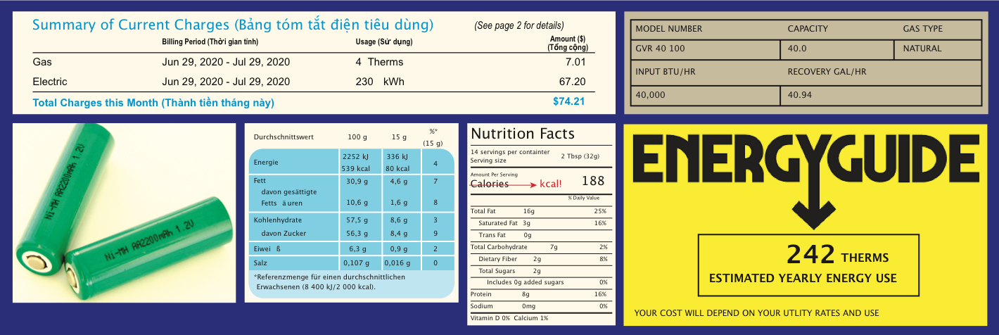

Chương 5. Đơn vị năng lượng và công suất

Đơn vị năng lượng từ cuộc sống hàng ngày. Theo chiều kim đồng hồ từ phía trên bên trái: hóa đơn tiện ích (kWh và Therms); nhãn bình nước nóng (Btu/giờ); Hướng dẫn năng lượng (EnergyGuide) cho cùng loại máy nước nóng (Therms); Nhãn dinh dưỡng của Hoa Kỳ cho bơ đậu phộng (Calo; đúng hơn phải là kcal); nhãn dinh dưỡng của Đức cho Nutella (kJ, kcal); và pin AA có thể sạc lại (\(2200\) mAh, \(1,2\) V)
Chương này là cơ sở để hiểu phần còn lại của nội dung trong cuốn sách này, để bạn đọc có thể học cách diễn giải và chuyển đổi đơn vị, đồng thời xây dựng trực giác hữu ích trong quá trình này.
Không giống như hầu hết các phần khác, chương này không kể về một câu chuyện nào hay nâng cao quan điểm của chúng ta về thế giới. Nhưng nó xây dựng nền tảng, giúp chúng ta có thể bắt đầu đánh giá được hậu quả của việc sử dụng năng lượng trong xã hội trong các chương tiếp theo. Hy vọng sự kiên nhẫn của bạn đọc sẽ được đền đáp.
1. Năng lượng (Energy)
Trước hết, năng lượng là gì?
Định nghĩa 5.1: Năng lượng
Năng lượng được định nghĩa bằng khả năng sinh công. Công được định nghĩa rõ ràng trong vật lý là tác dụng của lực qua một khoảng cách1. Cách sử dụng thông thường của từ “công” (hay công việc) tương đối phù hợp, trong việc đẩy một chiếc ghế dài lớn trên sàn (tác dụng lực trong một khoảng cách) hay nâng một chiếc thùng nặng lên kệ có cảm giác giống đang thực hiện một công việc và có thể khiến bạn mệt mỏi.
Đơn vị của lực theo SI (Hệ thống đơn vị đo được chuẩn hoá quốc tế) là Newton (N), chia nhỏ thành \(kg·m/s^2\) (kí hiệu · cũng tương tự như dấu nhân trong tiếng Việt). Cách tốt nhất để ghi nhớ điều này là thông qua Định luật thứ hai của Newton: \(F = ma\) (lực bằng khối lượng nhân với gia tốc). Khối lượng có đơn vị là kg và gia tốc2 được đo bằng mét trên giây bình phương.
Vì công bằng lực nhân khoảng cách, nên đơn vị của công (và của năng lượng) là Newton nhân mét, hay \(N·m\). Chúng ta đặt tên riêng cho đơn vị này là Joule (J). Như vậy, tác dụng một lực \(1\ N\) trên quãng đường \(1\ m\) tạo thành \(1\ J\) công và cần \(1\ J\) năng lượng để thực hiện. Bảng 5.1 cung cấp các ví dụ theo ngữ cảnh.
Ví dụ 5.1: Một số ví dụ3 minh họa lực nhân khoảng cách, hai ví dụ đầu có kết quả là một Joule năng lượng
- Đẩy một cuốn sách qua bàn, tác dụng một lực \(2\, N\) và trượt \(0,5\, m\) tương đương với \(1\, J\) công.
- Đẩy một chiếc ô tô đồ chơi bằng hộp diêm qua sàn có thể chỉ cần lực \(0,1\, N\). Người ta sẽ phải đẩy nó qua một khoảng cách \(10\, m\) để tạo nên một Joule năng lượng.
- Một ô tô đi trên mặt đất bằng phẳng có thể cần một lực \(150\, N\) để vượt qua ma sát (friction). Khi đó đẩy một ô tô đi \(5\, m\) cần \(750\, J\) công.
| Hành động | Năng lượng |
|---|---|
| Ném bóng nhựa | 15 J |
| Nâng túi toàn sách | 100 J |
| Đánh bóng chày | 120 J |
| Đạn bay | 5 kJ |
| Sạc điện thoại | 30 kJ |
| Ô tô trên đường cao tốc (Động năng) | 675 kJ |
| Chế độ ăn hàng ngày của con người | 8 MJ |
| 1 giờ lái xe trên đường cao tốc | 250 MJ |
Bảng 5.1: Năng lượng gần đúng cho các hoạt động quen thuộc. Ví dụ đầu tiên về xe đi trên đường cao tốc chỉ tính động năng, còn ví dụ thứ hai là sự tiêu tốn năng lượng cho cả hành trình.
Viết đơn vị Newton (N) dưới dạng \(kg·m/s^2\), ta thấy đơn vị năng lượng bằng \(J = N·m = kg·m^2/s^2\). Lưu ý rằng đơn vị này trông giống như khối lượng nhân với bình phương của tốc độ. Xem Hộp 5.1 để khám phá xem điều này có ý nghĩa như thế nào.
Hộp 5.1: Các đơn vị có ý nghĩa!
Hãy nghĩ về phương trình nổi tiếng \(E = mc^2\). Năng lượng bằng khối lượng nhân với bình phương tốc độ ánh sáng. Đơn vị đúng là rất khớp (\(kg·m^2/s^2\)) như đã nói ở trên!
Thêm vào đó, động năng (Kinetic Energy) bằng \(K.E. = \frac{1}{2}mv^2\), cũng mang cho ra cùng một đơn vị: khối lượng nhân bình phương tốc độ.
Thế năng hấp dẫn (Gravitational potential energy) chỉ là trọng lượng của một vật nhân với chiều cao vật đó được nâng lên4. Trọng lượng (lực) bằng khối lượng (kí hiệu là m) nhân với gia tốc hấp dẫn (\(g\))5, vì thế để nâng (áp dụng một lực bằng với trọng lượng) qua chiều qua (\(h\)) sẽ cho ra kết quả thế năng \(P.E. = mgh\). Đơn vị như sau:
Chúng ta sẽ bắt gặp những cách khác để mô tả năng lượng trong cuốn sách này, nhưng với bất kỳ cách nào, năng lượng cũng có thể chuyển thành đơn vị Joules, nếu muốn. Phần sau trong chương này trình bày chi tiết các đơn vị thay thế mà chúng ta phải làm quen để giải thích các thông tin về năng lượng trong đời sống hàng ngày.
2. Các dạng năng lượng và bảo toàn năng lượng
Năng lượng biểu hiện ở nhiều dạng khác nhau mà chúng ta sẽ đề cập sâu và chi tiết hơn trong các chương về ứng dụng năng lượng. Bây giờ chúng chỉ liệt kê các ứng dụng tương ứng với từng chương trong Bảng 5.2
| Dạng năng lượng | Công thức | Chương | Ứng dụng |
|---|---|---|---|
| Thế năng hấp dẫn | \(mgh\) | 11, 16 | Thuỷ điện, sóng nước |
| Động năng | \(\frac{1}{2}mv^2\) | 12, 16 | Gió, dòng hải lưu |
| Photon/ánh sáng | \(hv\) | 13 | Mặt trời |
| Hóa năng | \(h - ts\) | 8, 14 | Nhiên liệu hoá thạch, sinh khối |
| Nhiệt năng | \(c_{p}m\Delta{T}\) | 6, 16 | Địa nhiệt, động cơ nhiệt |
| Thế năng điện tích | \(qv\) | 15 | Pin, hạt nhân |
| Khối lượng (hạt nhân) | \(mc^2\) | 15 | Phân hạch & nhiệt hạch |
Bảng 5.2: Các dạng năng lượng. Từ dạng này có thể biến đổi sang dạng khác. Năng lượng hoá học (chemial energy) ở đây được biểu diễn bởi năng lượng Gibbs (Gibbs free energy).
Một nguyên lý nền tảng của vật lý là bảo toàn năng lượng (conservation of energy), mà chúng ta cho rằng sẽ không bao giờ bị vi phạm trong bất kì hệ thống nào6. Điều đó có nghĩa rằng năng lượng có thể chảy hay biến đổi từ dạng này sang dạng khác, nhưng nó không bao giờ được tạo ra hay mất đi.
Hộp 5.2: Năng lượng: tiền tệ của vật lý
Một cách hợp lý để khái niệm hóa việc bảo toàn năng lượng là nghĩ về nó như tiền tệ của vật lý. Nó có thể đổi chủ, nhưng không được tạo ra hay mất đi trong quá trình giao dịch này. Một số dư lớn trong một tài khoản ngân hàng giống như thế năng (potential energy): sẵn sàng để được tiêu dùng. Biến đổi năng lượng sang một dạng khác—như nhiệt năng (heat) hay động năng (kinetic energy)—cũng giống như hành động tiêu tiền vậy. Tốc độ (rate) sử dụng năng lượng được gọi là công suất (power).
Ví dụ 5.2.1 minh họa một số sự chuyển đổi năng lượng, và Hình 5.1 cung cấp một hình ví dụ. Mối liên hệ giữa nhưng nguồn năng lượng từ vũ trụ với những hoạt động thường ngày được mô tả kĩ hơn trong phần D.2.2. .
Ví dụ 5.2.1: Một số ví dụ minh hoạ
- Một hòn đá nằm ở rìa vách đá có thế năng hấp dẫn. Khi bị đẩy ra, nó sẽ chuyển đổi thế năng của mình thành động năng (tốc độ) khi nó rơi xuống mặt đất.
- Một con lắc luôn trao đổi động năng và thế năng, có thể dao động một thời gian mà không có ảnh hưởng của ma sát.
- Một thanh thuốc nổ có năng lượng dự trữ trong các liên kết hóa học (một dạng thế năng). Khi bắt lửa, vật liệu nổ trở nên rất nóng trong một thời gian rất ngắng, chuyển hóa năng thành nhiệt năng
- Quả cầu lửa của những vật liệu nóng giải phóng từ thuốc nổ lan rộng nhanh chóng, đẩykhông khí và các vật thể gần đó ra khỏi đường đi, từ đó biến nhiệt năng thành động năng
- Ánh sáng của mặt trời (photon) chiếu xuống một bãi đỗ xe tối màu, làm nóng bề mặt của nó khi quang năng chuyener hoá thành nhiệt năng.
- Một hạt nguyên tử uranium tách ra, giải phóng ra năng lượng hạt nhân (thế năng), tạo ra các hạt bay với vận tốc rất lơn (động năng). Những hạt này va vào các hạt xung quanh, biến động năng thành nhiệt năng.
- Nhiệt năng từ việc đốt nhiên liệu hóa thạch (fossil fuel) hay từ phản ứng phân hạch hạt nhân (nuclear fission) có thể dùng để sinh hơi nước hay quay tua-bin (động năng) từ đó tạo ra điện năng (hiệu điện thế—voltage, cường độ dòng điện—current).


Hình 5.1: Ví dụ về sự chuyển đổi từ thế năng (P.E) thành động năng (K.E.) khi một quả táo rơi từ trên cây. Năng lượng tổng cộng luôn bằng (ở đây là \(7\, J\)). Quả táo này tăng tốc khi có nhiều động năng hơn (mất đi thế năng). Khi đã rơi xuống mặt đất, năng lượng sẽ chuyển thành \(7\, J\) nhiệt năng (với nhiệt độ tăng lên không đáng kể).
Bất kỳ dạng năng lượng nào (ví dụ như trong Bảng 5.2) đều có thể chuyển đổi thành dạng khác, trực tiếp hay gián tiếp. Trong mỗi lần chuyển đổi, 100% năng lượng được sử dụng. Nói chung, năng lượng phân nhánh thành nhiều quá trình chuyển đổi, vì vậy chúng ta không đạt được hiệu suất 100% vào quá trình mà chúng ta mong muốn. Ví dụ về con lắc ở trên cuối cùng sẽ truyền năng lượng của nó vào việc khuấy động không khí (động năng) và ma sát (nhiệt năng) tại điểm xoay chiều. Không khí được khuấy động cuối cùng chuyển sang nhiệt thông qua ma sát bên trong (ma sát nhớt—viscous friction) của không khí.
Một lời giải thích hữu ích là nhiệt năng thực ra chỉ là những chuyển động ngẫu nhiên—động năng—của từng nguyên tử và phân tử. Vì vậy, trong trường hợp phân hạch hạt nhân (fission) trong Ví dụ 5.2.1, động năng ban đầu của các mảnh hạt nhân vốn có bản chất là nhiệt năng, nhưng ở nhiệt độ cao hơn (tốc độ nhanh hơn) so với vật chất xung quanh. Bằng cách va chạm với các nguyên tử xung quanh, tốc độ vượt quá được khuếch tán vào môi trường, làm tăng nhiệt độ của của môi trường đồng thời “làm mát” các phân hạt nhân khi chúng bị làm chậm lại.
Nếu tính đến tất cả các quá trình hay con đường chuyển đổi năng lượng7 có thể có, chúng ta tự tin rằng tổng năng lượng luôn không đổi. Không có gì bị mất đi cả8. Năng lượng không bao giờ được tạo ra hay bị phá huỷ trong bất cứ nghiên cứu nào. Nó chỉ chuyển từ dạng này sang dạng khác, thường chuyển đổi theo qua nhiều con đường song song. Tổng năng lượng cuối cùng cộng lại luôn bằng thời điểm ban đầu. Phần D.2.3 giải thích thêm cho những ai quan tâm để hiểu rõ hơn năng lượng cuối cùng sẽ đi về đâu và tại sao “mất năng lượng do nhiệt” thực chất không phải là mất mát mà chỉ là một nguồn dự trữ năng lượng khác.
3. Công suất
Trước khi tìm hiểu các đơn vị năng lượng thông dụng khác nhau, chúng ta nên tìm hiểu khái niệm quan trọng và đơn vị của công suất (power).
Định nghĩa 5.3.1 Công suất
Công suất được định nghĩa đơn giản là năng lượng trên thời gian: bao nhiêu năng lượng được sử dụng trong bao nhiêu thời gian. Do đó, đơn vị SI là \(J/s\), chúng ta thường gọi là Watts (W). 1 Watt chỉ đơn giản là 1 Joule trên giây.
Mặc dù năng lượng là khả năng thực hiện công nhưng nó không nói lên điều gì về việc công đó có thể được thực hiện nhanh như thế nào. Công suất đề cập đến tốc độ tiêu hao năng lượng. Hình 5.2 cho biết về những mức tiêu hao năng lượng trung bình của động vật và thiết bị gia dụng quen thuộc.
Ví dụ 5.3.1 Nâng hộp
Nâng một hộp nặng 10 kg—trọng lượng của nó do đó bằng 100 N—theo phương thẳng đứng có độ cao 2 m thì cần khoảng 200 J năng lượng. Nếu thực hiện trong một giây, tác vụ cần 200 W (200 Joules trong một giây). Kéo dài cùng một nhiệm vụ trong bốn giây chỉ cần 50 W.
Trọng lượng bằng \(mg\). Trong trường hợp này, \(m\) bằng \(10 kg\). Nếu chúng ta chặt chẽ hơn, gia tốc trọng trường \(g = 9,8\,m/s^2\), nhưng để tiện lợi chúng ta lấy \(g ≈ 10\,m/s^2\) mà không làm mất độ chính xác quá nhiều.


Hình 5.2: Các mức năng lượng khác nhau để so sánh và xây dựng trực giác. Các mục màu xanh lá cây tương ứng với công suất trao đổi chất (metabolism). Các mục màu tím là các thiết bị và dụng cụ. Các mục màu cam là tổng mức sử dụng năng lượng bình quân đầu người cho xã hội (không tính đến chuyển hóa trao đổi chất). Lưu ý rằng các thiết bị có nhiệm vụ tạo ra nhiệt đòi hỏi nguồn điện lớn nhất. Mục "thiết bị sưởi ấm" là chũng cho những thứ như lò vi sóng, lò nướng bánh mì, máy sưởi gia đình hay máy sấy tóc cắm vào ổ điện. Đừng coi những con số được cung cấp ở đây là tuyệt đối chính xác, vì hầu hết mọi thứ trong hình sẽ thay đổi đôi chút tùy theo từng trường hợp.
Tất nhiên, chúng ta thường áp dụng số nhân \(10^3\) (1000 lần) thông thường cho đơn vị để làm cho nó hữu ích hơn. Do đó, chúng ta có lũy tiến W, kW, MW, GW, TW, v.v. Để tham khảo, một khuôn viên trường đại học lớn sẽ cần vài chục MW (megawatt) điện. Một nhà máy điện lớn thường có công suất từ 1–4 GW. Xem Bảng 5.3 để biết các thang đo mà chúng ta có thể sử dụng các hệ số nhân khác nhau.
| Số nhân | Đơn vị | Qui mô |
|---|---|---|
| \(1\) | W | Điện thoại; máy tính |
| \(10^3\) | kW | Lò nướng |
| \(10^6\) | MW | Trường đại học; cộng đồng |
| \(10^9\) | GW | Nhà máy nhiệt điện; thành phố |
| \(10^{12}\) | TW | Toàn xã hội |
Bảng 5.3: Hệ số nhân công suất và qui mô.
4. Kilowatt giờ (kWh)
Định nghĩa 5.4.1
Kilowatt-giờ (kilowatt-hour) là lượng năng lượng (không phải công suất) do tiêu hao năng lượng với tốc độ 1 kW trong thời gian một giờ và là đơn vị được lựa chọn để sử dụng trong điện dân dụng.
Đơn vị này gây ra rất nhiều sự nhầm lẫn, nhưng thực sự nó khá đơn giản. Kilowatt-giờ là kilowatt nhân một giờ. Vì thế nó bằng công suất nhân với thời gian, tương đương với năng lượng (vì công suất được định nghĩa là tiêu thụ năng lượng trên thời gian).
Ví dụ 5.4.1
Giả sử bạn bật máy sưởi trong phòng có công suất \(1.000\, W\, (1\, kW)\) và chạy trong một giờ. Xin chúc mừng—bạn vừa tiêu thụ hết \(1\, kWh\).
Hoặc có thể bạn bật bóng đèn sợi đốt công suất \(100\, W\, (0,1\, kW)\) và để nó sáng trong 10 giờ: cũng là \(1 kWh\)!
Điều gì sẽ xảy ra nếu bạn chạy nồi cơm điện \(500\, W\, (0,5\, kW)\) trong nửa giờ? Đó là \(0,25\, kWh\)
Lưu ý: Có thể hữu ích cho bạn đọc khi nghĩ đến chuỗi: kilowatt nhân giờ → kW × h → kW-h → kWh.
Việc chuyển đổi trở lại Joules rất đơn giản, vì \(1\, kW\) bằng \(1.000\, J/s\) và một giờ bằng \(3.600\, s\). Vậy $1\, kWh bằng \(1 kW\) nhân 1 giờ, tức là \(1.000\, J/s\) nhân \(3.600\, s\), và do đó bằng \(3.600.000\, J\), hay \(3{,}6\, MJ\). Một thước đo liên quan có khi được đưa ra: watt-giờ (Wh). Tương tự như vậy , giá trị này tương đương với \(1\, J/s\) trong \(3.600\) giây hoặc \(3.600\, J\)9.
Hộp 5.3: Đừng trở thành một trong số những người này...
Nếu bạn từng nghe ai đó nói “kilowatt mỗi giờ”, thì đó có thể là một sai lầm10 và hệ quả là khiến mọi người lầm tưởng rằng kilowatt là đơn vị năng lượng, không phải công suất. Kilowatt đã là tốc độ sử dụng năng lượng: 1.000 Joules mỗi giây.
Một số người có xu hướng nhầm lẫn giữa kW và kWh 11. Kilowatt là đơn vị công suất hay tốc độ sử dụng năng lượng. Hãy nghĩ về nó giống như một chiếc đồng hồ tốc độ: bạn đang di chuyển nhanh như thế nào (trong không gian hoặc năng lượng)? Kilowatt-giờ là phép nhân công suất với thời gian, thành năng lượng. Nó giống đồng hồ đo hành trình lái xe hơn: bạn đã tích lũy được bao nhiêu (khoảng cách hay năng lượng)? Cũng giống như khoảng cách bằng tốc độ (tốc độ) nhân với thời gian, năng lượng bằng tốc độ (công suất) nhân với thời gian.
Ví dụ 5.4.2 Chúng ta sẽ tìm hiểu kWh sử dụng bóng đèn làm ví dụ
Giả sử bóng đèn được dán nhãn là 100 W12. Năng lượng tiêu thụ của nó là bao nhiêu?
Điều này tuỳ thuộc vào thời gian nó được bật. Nếu nó không bao giờ được bật, nó sẽ không dùng năng lượng. Nếu nó được bật trong 10 giây, nó sẽ tiêu thụ năng lượng ít hơn nhiều so với việc được dùng chiếu sáng cả ngày.
Đặc tính đặc trưng của bóng đèn là công suất tiêu thụ khi nó được khi bật—trong trường hợp này là 100 W. Nó chỉ có một tốc độ. Như với một chiếc ô tô và đồng hồ tốc độ, điều này tương tự như việc một chiếc ô tô đang di chuyển với tốc độ không đổi13 và hỏi nó đã đi được bao xa. Chà, điều này phụ thuộc vào việc nó dành bao nhiêu thời gian để di chuyển với tốc độ đó.
Vì vậy, hãy xem kWh (năng lượng) là lượng tích lũy tăng theo thời gian. Mặt khác, kW là tốc độ tiêu hao năng lượng.
5. Calo (kcal)
Đơn vị năng lượng chung để mô tả các quá trình hóa học và nhiệt là calo và một số đơn vị tương tự.
Định nghĩa 5.5.1
Một calo (calorie) được định nghĩa là lượng năng lượng cần thiết để làm nóng một gam nước (hay cũng tương đương 1 mL, hoặc 1 cm3, hoặc 1 cc) lên một độ C (Hình 5.3). Một calo (1 cal) (lưu ý chữ “c” viết thưởng) bằng 4,184 J năng lượng.
Một Calo (lưu ý chứ “C” viết hoa)14 bằng 1.000 calo, hay 1 kilocalorie (1 kcal), tương đương với 4.184 J. Để dễ nhớ nhất, đó là lượng năng lượng cần thiết để làm nóng một kg (hoặc một lít; 1 L) nước lên 1°C. Do quy ước sử dụng tuỳ tiện về Calo (ở Hoa Kì), nên chúng ta sẽ chọn đơn vị kcal bất cứ khi nào có thể.
Nhãn thực phẩm ở Hoa Kỳ ghi bằng Calo, mô tả hàm lượng năng lượng trong thực phẩm chúng ta ăn15. Tất cả chúng ta sẽ tự giúp mình bằng cách gọi những kcal này thay vì Calo (có giá trị đương). Nhiều quốc gia khác sử dụng kJ hoặc kcal (như ở Việt Nam, ND) một cách hợp lý để định lượng năng lượng thực phẩm.


Hình 5.3: Theo định nghĩa về calo, thêm 50 calo vào một gam nước sẽ làm tăng nhiệt độ của nó lên 50°C.
Ví dụ 5.5.1
Để làm nóng 30 mL (30 g) nước lên 5°C cần 150 cal, hoặc hơn 600 J một chút.
Bơm 40 kcal năng lượng vào chai nước 2 L (2 kg) sẽ làm chai nước nóng thêm 20 độ C.
Uống 250 mL nước đá lạnh và làm nóng đến nhiệt độ cơ thể (do đó tăng nhiệt độ lên khoảng 35 độ) sẽ tiêu tốn khoảng 8.750 cal, hay 8,75 kcal, hay hơn 36 kJ năng lượng một chút.
Thông thường, chỉ cần nhớ rằng hệ số chuyển đổi giữa calo và Joule là khoảng 4,2—hay 4 nếu thực hiện phép tính thô.
\(1\,cal = 4,184\,J ≈ 4,2\, J ≈ 4\, J\) \(1\, kcal = 4.184\, J ≈ 4,2\, kJ ≈ 4\, kJ\)
Nhiệt dung (heat capacity), là năng lượng cần thiết để tăng nhiệt độ của một vật lên \(1°C\). Nhiệt dung riêng (specific heat capacity) bằng nhiệt dung chia cho khối lượng, đây là một đặc trưng căn bản của vật liệu. Nhiệt dung riêng của nước là \(4.184\ J/kg/°C\), liên quan mật thiết đến định nghĩa của một kilocalo (\(1\ kcal = 4.184\ J\))
Hai ví dụ kế tiếp sẽ giúp hiểu rõ hơn việc sử dụng kcal (đơn vị dùng nhiều hơn trong sách này so với cal vốn nhỏ hơn nhiều).
Ví dụ 5.5.2
Một chế độ ăn điển hình có lượng tiêu thụ hàng ngày khoảng 2.000 kcal năng lượng thực phẩm. Nếu bạn nghĩ về điều này, 2.000 kcal/ngày là đơn vị công suất (năng lượng trên thời gian). Chúng ta có thể chuyển đổi sang Watts bằng cách chuyển đổi kcal thành J và một ngày thành giây. 2.000 kcal bằng 8,368 MJ. Một ngày có 86.400 giây. Chúng ta sẽ có công suất tiêu thụ rất gần với 100 W (8,368 MJ / 86.400 s).
Ví dụ thứ hai giúp hiểu rõ hơn định nghĩa của kcal: đun nước
Ví dụ 5.5.3
Giả sử bạn muốn đun nóng nửa lít (0,5 kg) nước từ nhiệt độ phòng (20°C) đến sôi (100°C). Vì mỗi kcal có thể làm nóng 1 kg thêm 1°C, năng lượng tương tự sẽ tăng nửa kg nước của chúng ta lên 2°C16, tăng nhiệt độ lên 80C sẽ cần 40 kcal, hay 167 kJ.
Nếu nước được làm nóng ở tốc độ 1.000 W (1.000 J/s), nước sẽ mất 167 giây (gần 3 phút) để đạt đến nhiệt độ sôi.
Lưu ý rằng chúng tôi không áp dụng công thức rõ ràng trong Ví dụ 5.5.3. Bằng cách lí luận theo từng bước, chúng tôi cố gắng giữ cho nó trực quan. Chúng tôi có thể viết công thức, nhưng có cách ngầm tạo các công thức một cách nhanh chóng bằng việc nhận ra rằng lượng năng lượng cần thiết sẽ tỉ lệ thuận với khối lượng nước và mức độ tăng nhiệt độ. Hy vọng rằng cách tiếp cận này sẽ giúp bạn hiểu sâu hơn về khái niệm, đồng thời việc in công thức lên đây có thể khiến bạn không hiểu được khái niệm này.
6. Đơn vị nhiệt lượng Anh (Btu)
Tại sao chúng ta lại lãng phí thời gian để nói về đơn vị nhiệt lượng phức tạp của Anh (Btu)? Đó là vì dữ liệu do Cơ quan Thông tin Năng lượng Hoa Kỳ cung cấp về việc sử dụng năng lượng toàn cầu dựa trên Btu (còn ở Việt Nam, ít nhất trong lĩnh vực máy điều hoà, thường có đơn vị đo bằng Btu, ND). Cụ thể hơn, tiêu thụ năng lượng hàng năm ở quy mô quốc gia được đo bằng đơn vị triệu triệu (\(10^{15}\)) Btu (xem Hộp 5.4). Ngoài ra, các thiết bị sưởi ấm ở Hoa Kì17 được định mức bằng Btu/giờ—một đơn vị năng lượng có thể chuyển đổi thành Watts.
Định nghĩa 5.6.1
Btu là đơn vị theo hệ thống đo lường Anh (imperial) tương tự như kcal18. Một Btu là năng lượng cần thiết để làm nóng một pound nước lên một độ F.
Chúng ta có thể hiểu việc chuyển đổi sang Joules theo cách sau: một pound bằng khoảng nửa kg và một độ F bằng khoảng nửa độ C. Vì vậy, một Btu sẽ bằng khoảng một phần tư kcal. Thật vậy, 1.055 J gần bằng một phần tư của 4.184 J.
Hộp 5.4: Quads: qBtu
Hoa Kỳ sử dụng triệu triệu Btu để thể hiện chi tiêu năng lượng hàng năm ở quy mô quốc gia. Nó được ký hiệu là qBtu, hay “quads” một cách không chính. Một qBtu xấp xỉ \(10^{18}\, J\)19.
Hoa Kì sử dụng khoảng 100 quad mỗi năm. Vì một năm bằng khoảng \(3,16 × 10^7 giây\)20, việc chia năng lượng tính bằng Joules cho thời gian tính bằng giây cho chúng ta biết rằng công suất của Hoa Kỳ là khoảng \(3 × 10^{12}\, W (3\, TW)\), tính ra công suất (tốc độ sử dụng năng lượng) trung bình theo đầu người khoảng 10.000 W.
Ví dụ 5.6.1
Đối với các thiết bị được đặc trưng bởi Btu/giờ, chúng ta có thể liên hệ công suất tính bằng Watt thông qua \(1\, Btu/giờ\) là \(1.055\, J\) trên \(3.600\) giây, tính ra là \(0,293\, W\).
Như vậy, một máy nước nóng có công suất \(30.000\, Btu/giờ\) có công suất là \(8.800\, W\).
Chúng ta cũng hãy tạm dừng để xem sẽ mất bao lâu để làm nóng lượng nước nóng cho một lần tắm vòi hoa sen với tốc độ của máy này. Chúng ta sẽ thực hiện theo hai cách:
-
Làm nóng \(15\, gallon\)21 (\(125\, pound\)) nước mát từ nhiệt độ \(68°F\) đến nhiệt độ nóng \(131°F\) ở tốc độ \(30.000\, Btu/giờ\) sẽ mất bao lâu? Chúng ta cần tính được \(125\, pound × (131°F - 68°F) = 7.900\, Btu\) với tốc độ tiêu thụ năng lượng 30.000 Btu/giờ. Vì vậy sẽ mất \(7.900/30.000\) hay gần \(16\) phút.
-
Theo hệ đơn vị mét (metric), 15 gallons tương đương \(57\, L\) (\(57\, kg\)), và chúng ta cần làm nóng nước từ nhiệt độ \(20°C\) đến \(55°C\) với \(8.800\, W\)22. Vì 1 kcal có thể làm nóng 1 kg nước lên \(1°C\), làm nóng \(57\, kg\) nước lên \(35°C\) cần \(57 × 35\) kcal, hay \(57 × 35 × 4.184\, J = 8.35\,MJ\); ở công suất \(8.800\, W\) sẽ cần \(8.350.000/8.800 ≈ 950\) giây hay gần \(16\) phút (cùng câu trả lời so với cách 1).
7. Therms
Chúng ta sẽ hiếm khi gặp đơn vị này nhưng hãy đưa nó vào đây vì các hóa đơn tiện ích khí đốt tự nhiên23 ở Hoa Kỳ thường sử dụng Therms. Vì một phần mục tiêu của cuốn sách này là nâng cao hiểu biết cá nhân về năng lượng và cách so sánh các thước đo năng lượng khác nhau (ví dụ: trên hóa đơn điện nước), nên các quy ước ở Hoa Kỳ đòi hỏi cần đề cập đến đơn vị này24. (Ở Việt Nam không mấy khi cần dùng đơn vị này, nên bạn đọc có thể tạm thời bỏ qua, ND).
Định nghĩa 5.7.1
Một Therm bằng \(100.000\, Btu\), hay \(1,055 × 10^8 J\), hoặc \(29{,}3\ kWh\)
Hộp 5.5: Tại sao là Therms
Therm được áp dụng một phần vì tính tiện lợi vì 100 feet khối khí tự nhiên (CCF hoặc 100 CF), được đo trực tiếp, gần tương đương với 1,036 Therm. Tương tự, một gallon (3,785 L) khí propan lỏng25 chứa 91.500 Btu, tức là 0,915 Therms. Do đó, Therm rất phù hợp để với đo năng lượng chứa trong khí tự nhiên (100 feet khối) hoặc propan lỏng (một gallon).
Ví dụ 5.7.1
Có thể cần 10.000 kcal năng lượng26 để đun nóng một lượng nước lạnh mới truyền vào bình đun nước nóng. Cụ thể cần bao nhiêu Therms?
Chúng ta thực hiện biến đổi hai bước: đầu tiên, 10.000 kcal bằng 41,84 MJ, ở mức 1.055 J mỗi Btu tính ra khoảng 40.000 Btu, tương đương với 0,4 Therm, cần khoảng 40 feet khối khí tự nhiên, hoặc ít hơn một chút so với nửa gallon (khoảng 2 L) propan lỏng.
Nếu chúng ta biết máy nước nóng có công suất 30.000 Btu mỗi giờ thì sẽ mất 1 giờ 20 phút để hoàn thành công việc.
Thật thú vị khi suy ngẫm về quan điểm cho rằng 200 L nước có thể được đun nóng nước lên 50°C chỉ với 2 L nhiên liệu lỏng, chỉ chiếm 1% thể tích nước. Nếu đun đến sôi thì lượng nhiên liệu cần gấp đôi, tức là 2% thể tích nước. Có vẻ như đây là một món hời—đặc biệt đối với những khách ba lô muốn đun sôi nước và phải mang nhiên liệu đi khắp nơi để làm việc đó. Nhưng sự kém hiệu quả trong việc truyền nhiệt vào nước có thể cần nhiều hơn 10% thể tích là nhiên liệu.
8. Điện năng
Tương tác điện bị chi phối bởi các hạt điện tích đẩy lẫn nhau. Với mục đích của chương này, chúng ta chỉ cần hiểu một vài khái niệm. Đầu tiên là điện thế.
Điện thế (voltage) là thước đo thế năng điện, tính bằng Vôn, và có thể được coi tương tự như độ cao mà một vật được nâng lên27. Điện thế cao hơn giống như ngồi cao hơn trên kệ và có thể thực hiện nhiều công hơn nếu được thả ra.
Điện tích (charge) di chuyển được xung quanh bởi lực điện, và lượng điện tích được di chuyển đóng vai trò tương tự như vai trò của khối lượng trong môi trường hấp dẫn. Đơn vị điện tích là Coulomb (C), và đơn vị điện tích nhỏ nhất mà chúng ta gặp trong trường hợp bình thường là của proton (\(+1,6 × 10^{-19}\,C\)) hoặc electron (\(-1,6 × 10^{-19}\, C\)).
Định nghĩa 5.8.1
Năng lượng trong một điện tích, \(q\), với điện áp, \(V\) bằng:
Một Coulomb điện tích ở hiệu điện thế 1 V có năng lượng là 1 J.
Cường độ dòng điện điện là tốc độ dòng điện chạy, và thường được ký hiệu bằng chữ cái \(I\). Hãy tưởng tượng thiết lập một trạm thu phí trong một dây dẫn điện và đếm xem có bao nhiêu điện tích (hoặc bao nhiêu điện tích tích lũy) đi qua trạm trong một đơn vị thời gian. Điều này dẫn tới Định nghĩa 5.8.2.
Định nghĩa 5.8.2
Dòng điện được đo bằng đơn vị Ampere, được định nghĩa bằng một Coulomb trên giây.
Di chuyển một Coulomb qua một Volt mỗi giây sẽ tạo thành một Joule năng lượng mỗi giây, đó là định nghĩa của một Watt. Kết hợp các khái niệm của Định nghĩa 5.8.1 và Định nghĩa 5.8.2 với nhau, chúng ta có thể định nghĩa được công suất điện.
Định nghĩa 5.8.3
Công suất điện đơn giản là dòng điện nhân với điện áp:
Dòng điện, \(I\), tính bằng Ampere, và điện áp, \(V\), tính bằng Volt.
Ví dụ 5.8.1
Các hộ gia đình ở Mỹ thường có cầu dao cho phép dòng điện tối đa 15 hoặc 20 Amperes đối với các ổ cắm điện thông thường. Ở điện áp 120V28, điều này tương ứng với công suất tối đa 1.800 W hay 2.400 W29.
Cuối cùng, chúng ta sẽ chuẩn bị hiểu một cục pin sẽ chứa được bao nhiêu năng lượng. Các loại pin được đo đạc bằng hai con số: điện áp và dung lượng điện tích. Vì cường độ dòng được là số điện tích trên thời gian, nên việc nhân dòng điện và thời gian sẽ cho kết quả là dung lượng điện tích30. Do đó, dung lượng sạc trong pin được đặc trưng là Ampere-giờ (Ah) hoặc milli-ampere-giờ (mAh). Vì Ampere nhân Volts bằng Watts (Phương trình 5.2), nên Ampere-giờ nhân Volt bằng Watt-giờ, một đơn vị năng lượng quen thuộc ở Phần 5.5.
Ví dụ 5.8.2
Một viên pin 9 V thông thường có dung lượng 500 mAh. Nó tương đương với bao nhiêu năng lượng?
500 mAh là 0,5 Ah. Nhân với 9 V sẽ tạo ra 4,5 Wh. Hãy nhớ rằng 1 Wh bằng 1 J/s nhân 3.600 s (một giờ), hoặc 3.600 J. Vậy 4,5 Wh bằng 16,2 kJ.
Chúng ta có thể cung cấp năng lượng cho dãy đèn LED 1 W từ pin này trong bao lâu ? Chúng ta có thể theo tính toán như trên (16,2 kJ chia cho 1 J/s) và ra kết quả 16.200 giây hoặc nhận ra rằng pin 4,5 Wh có thể phân phối 1 W trong 4,5 giờ. Cả hai cách đều tương đương nhau31.
9. Electron Volt (eV)
Electron-Volt (eV) là đơn vị năng lượng được lựa chọn ở quy mô nguyên tử. Điều này khiến nó trở nên lý tưởng khi thảo luận về cường độ liên kết hóa học (chemical bond strength) riêng lẻ, năng lượng của từng photon ánh sáng phát ra từ nguyên tử, năng lượng nhiệt trên mỗi nguyên tử hay phân tử32 Chúng ta cũng sử dụng eV cho vật lý hạt nhân, nhưng phải tăng quy mô lên một triệu lần và do đó đề cập đến mega-electron-volt, hay MeV.
Chúng ta đã đề cập đến tất cả các khái niệm liên quan để hiểu eV trong Phần 5.8. Tuy nhiên để giúp bạn đọc dễ tra cứu và tham khảo, nó được tách thành một phần riêng. Định nghĩa này bám sát Định nghĩa 5.8.1.
Định nghĩa 5.9.1
Một electron-volt là năng lượng liên quan đến việc đẩy một đơn vị điện tích electron, \(|e| = 1,6 × 10^{-19}\, Coulomb\), qua điện thế 1 V:
Electron-volt, ở mức \(1,6 × 10^{-19}\, J\), là một lượng năng lượng rất nhỏ. Nhưng nó ở mức độ phù hợp để mô tả các quá trình năng lượng của từng nguyên tử.
Ví dụ 5.9.1
Khi 12 gam các-bon (một mol, hay \(6 × 10^{23}\) nguyên tử33) phản ứng với ôxy tạo thành CO2, khoảng 394 kJ năng lượng được giải phóng34. Tính năng lượng giải phóng trên mỗi nguyên tử cacbon bằng electron-volt.
Vì chúng ta có một mol, hoặc \(6 × 10^{23}\) nguyên tử các-bon, nên chúng ta chia tổng năng lượng (\(3{,}94 × 10^5 J\)) cho số nguyên tử để thu được \(6{,}5 × 10^{-19}\, J\) mỗi nguyên tử. Giá trị này chỉ lớn hơn 1 eV (\(1{,}6 × 10^{-19}\, J\)) một chút, khi chia ra ta có kết quả rất gần với 4 eV trên mỗi nguyên tử.
Bởi vì CO2 có tổng cộng bốn liên kết giữa nguyên tử các-bon và hai nguyên tử ôxy35, chúng ta thấy rằng mỗi liên kết chiếm khoảng 1 eV. Liên kết hoá học thường có năng lượng trong khoảng này, làm nổi bật lên sự hữu ích khi dùng đơn vị eV ở cấp độ nguyên tử.
10. Quang năng
Quang năng hay năng lượng ánh sáng và quang phổ của nó sẽ được khám phá rộng rãi hơn trong Chương 13 về Năng lượng mặt trời, nhưng các khái niệm chính sẽ được trình bày đầy đủ ở đây.
Ánh sáng có thể được sử dụng để mô tả bất kỳ phần nào của quang phổ điện từ (electromagnetic spectrum), từ sóng vô tuyến (radio wave) và sóng vi ba (microwave), cho đến tia hồng ngoại (infra-red), ánh sáng khả kiến (visible light), tia cực tím (ultraviolet) và đến tia X (X-ray) và tia gamma. Giống như các nguyên tử, ánh sáng được “lượng tử hóa”(quantized) thành những đơn vị nhỏ nhất không thể phân chia được—trong trường hợp này là các hạt gọi là photon. Năng lượng của một photon riêng lẻ đặc trưng cho bước sóng của nó, 𝜆 (tiếng Hy Lạp là lambda), hay tần số, 𝜈 (tiếng Hy Lạp là nu)36.
Định nghĩa 5.10.1
Năng lượng của một photon cho tính bằng:
với \(h = 6{,}626 × 10^{−34}\, J·s\) là Hằng số Planck và \(𝑐 ≈ 3{,}0 × 10^8\, m/s\) là tốc độ ánh sáng (trong chân không).
Ví dụ 5.10.1
Ánh sáng nhìn thấy có bước sóng \(0{,}4–0{,}7 𝜇m\)37 ứng với \(2{,}8–5{,}0 × 10^{−19}\, J\) cho mỗi photon.
Chúng ta cũng thường xuyên biểu diễn năng lượng photon bằng electron-volt (eV) theo Định nghĩa 5.10.2
Định nghĩa 5.10.2
Với bước sóng tính bằng micron (\(𝜇m\)), năng lượng của một photon tính bằng công thức:
Ví dụ 5.10.2
Phần đầu màu đỏ của quang phổ khả kiến, bước sóng khoảng \(0{,}7\,𝜇m\), tương ứng với năng lượng photon khoảng \(1{,}8\, eV\), trong khi phần đầu màu xanh, bước sóng khoảng \(0{,}4\, 𝜇m\), tương ứng với năng lượng photon khoảng \(3{,}1\, eV\).
11. Kết luận
Mỗi chương đều có phần kết luận, thường là chắt lọc những bài học quan trọng từ chương đó hoặc đưa ra những suy ngẫm sau cùng. Ở đây, chúng ta có thể củng cố thêm quan điểm rằng năng lượng luôn có thể được biểu thị bằng Joules hoặc chuyển đổi thành bất kỳ đơn vị nào được mô tả trong chương này. Điều quan trọng nữa là khái niệm về năng lượng được bảo toàn—chỉ có thể biến đổi từ dạng này sang dạng khác nhưng không bao giờ thực sự mất đi hay tự sinh ra.
Tác giả: T.W. Murphy, Jr. ©2022; Creative Commons Attibution-NonCommercial 4.0 International License; Tải miễn phí tại: https://escholarship.org/uc/energy_ambitions.
Dịch giả: Team Sống bền vững
-
Định nghĩa này áp dụng cho trường hợp thông thường khi chuyển động thẳng theo với hướng của lực, như đẩy một chiếc hộp qua mặt sàn bằng phẳng, đẩy một chiếc ô tô dọc đường nhựa hay nâng một vật nặng. ↩
-
Gia tốc là tốc độ thay đổi vận tốc. Vì vận tốc được đo bằng mét trên giây (\(m/s\)) nên tốc độ thay đổi của nó sẽ là mét trên giây trên giây, hay \(m/s/s\), hay \(m/s^2\). Một số bạn đọc có thể biết rằng gia tốc trọng trường trên bề mặt Trái đất khoảng \(9{,}8\, m/s^2\), đây là một cách khác để nhớ. ↩
-
Mỗi ví dụ như thế này có thể dùng để làm dẫn chứng cho hàng loạt các ví dụ khác, chỉ cần thay số liệu. ↩
-
Một ví dụ khác của công bằng lực nhân với khoảng cách (\(J = N·m\)) ↩
-
Lực cần phải có để chống lại hấp dẫn là \(F = ma = m𝑔\) ↩
-
Ngoại lệ duy nhất là đối với quy mô vũ trụ và thời gian. Nhưng trên quy mô thậm chí lớn như Hệ Ngân Hà và trải qua hàng triệu năm, chúng ta có nền tảng vững chắc để coi bảo toàn năng lượng là bất khả xâm phạm. Thật thú vị khi chú ý rằng sự bảo toàn năng lượng bắt nguồn từ sự đối xứng trong thời gian (symmetry in time): nếu các định luật và hằng số của vũ trụ giống nhau trong một khoảng thời gian nào đó thì năng lượng sẽ bảo toàn trong thời gian đó—một khái niệm phát kiến bởi Emmy Noether. Xem thêm trong Phần D.2 ↩
-
...đôi khi được gọi là kênh năng lượng ↩
-
Trên thực tế, nguyên lý này đã được xác lập rõ ràng đến mức các hạt mới (như neutrino) đã được khám phá ra khi tính toán năng lượng bị thiếu hụt từ bảo toàn năng lượng trong các phản ứng hạt nhân. ↩
-
Một Wh bằng một phần nghìn kWh, không có gì đáng ngạc nhiên ↩
-
Theo nghĩa đen, kW/giờ sẽ là một loại gia tốc tiêu thụ năng lượng. Đó là một điều trên thực tế có thể xảy ra, nhưng nó thường không phải là điều mọi người muốn nói. ↩
-
Có thể liên quan đến Hộp 5.3 ↩
-
...một bóng đèn sợi đốt chẳng hạn ↩
-
...có thể với tốc độ 30 m/s; 67 m/phút; 108 km/h ↩
-
Điều này có thể thắng giải dành cho phép chuyển đổi ngớ ngẩn nhất trong khoa học: không bao giờ nên định nghĩa một đơn vị bằng cách phân biệt ra viết hoa và viết thường, vì ngôn ngữ bằng lời nói sẽ không thể hiện được điều này! ↩
-
Quá trình trao đổi chất của con người không giống như việc đun nóng nước, nhưng năng lượng liên quan vẫn có thể được tính bằng đơn vị năng lượng được xác định dưới dạng đun nóng nước. Nó vẫn chỉ là năng lượng. ↩
-
Hãy chắc chắn rằng điều này rõ ràng với bạn; bằng việc tìm hiểu, chúng ta đang học các khái niệm thay vì các công thức, vốn giúp chúng ta hiểu rõ và nhơ lâu hơn. ↩
-
...máy nước nóng, lò sưởi, máy điều hòa không khí , lò nướng và bếp ↩
-
Hãy nhớ lại rằng 1 kcal là năng lượng cần thiết để làm nóng một kg nước lên 1°C. ↩
-
Chính xác hơn là \(1.055 × 10^{18}\, J\) ↩
-
Một cách dễ thương và thuận tiện để ghi nhớ điều này, ước chừng là \(\pi × 10^7\) mỗi năm ↩
-
Trung bình chảy vòi sen chảy với tốc độ 2 gallon, hay ∼8 L, mỗi phút. ↩
-
30.000 Btu/giờ tương đương với 8.800 W. ↩
-
Xem trong hình hóa đơn ở đầu chương ↩
-
Chương về chiến lược thích nghi sẽ đề cập rõ hơn việc chúng ta có thể làm với hóa đơn điện. ↩
-
Propane thường được sử dụng ở những vùng sâu vùng xan để thay thế cho khí đốt tự nhiên khi không có cơ sở hạ tầng đường ống dẫn khí đốt tự nhiên. ↩
-
Dựa trên dung tích 200 L, kéo nước lạnh ở 5°C vào và đun nóng đến 55°C, do đó cần 200 kg × 50°C (kcal). ↩
-
...làm cho điện thế rất giống với năng lượng thế năng hấp dẫn ↩
-
Bản chất dòng điện xoay chiều đã được cung ứng trong phép đo điện áp này ↩
-
Các quy định về an toàn giới hạn việc sử dụng liên tục ở mức 80% công suất dòng điện của cầu dao, do đó trên thực tế giới hạn này lần lượt là 1.400 W và 1.920 W. Đây là lý do tại sao “các thiết bị sưởi ấm” trong Hình 5.2 có công suất tối đa khoảng 1.500 W: giới hạn cầu dao/an toàn. ↩
-
Ví dụ: 0,1 Ampere (0,1 Coulomb mỗi giây) của dòng điện được duy trì trong khoảng thời gian 100 giây sẽ tạo ra 10 Coulomb. ↩
-
Tiếp cận một vấn đề từ nhiều hướng mang tính xác thực cũng như độ linh hoạt cao hơn.* ↩
-
Chỉ đơn thuần là động năng của các hạt này. ↩
-
Xem Phụ lục B để iết thêm thông tin cơ bản/bồi dưỡng về hoá học ↩
-
Các bảng trong sách hóa học chứa loại thông tin này. ↩
-
Mỗi liên kết cácbon-ôxy là một liên kết đôi , nghĩa là có 2 electron tham gia vào liên kết, tổng cộng là 4 electron ↩
-
Bước sóng và tần số liên hệ với nhau bằng tốc độ ánh sáng, \(𝑐\) thông qua phương trình \(𝜆𝜈 = 𝑐\). ↩
-
Một micron (\(𝜇m\), hay micromet) tương đương \(10^{-6}\, m\). ↩